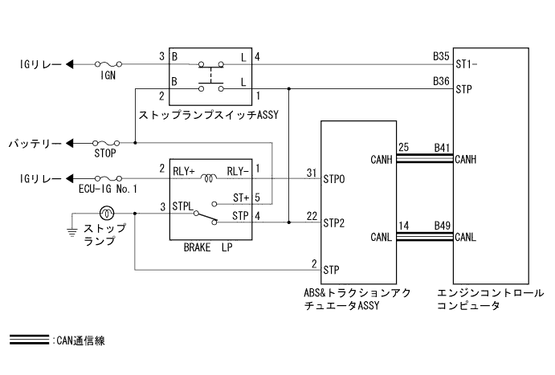
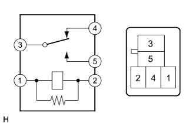
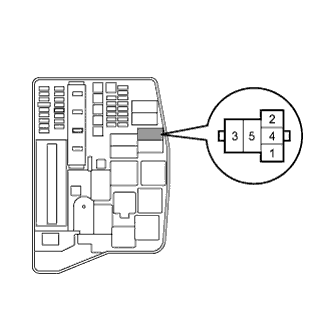
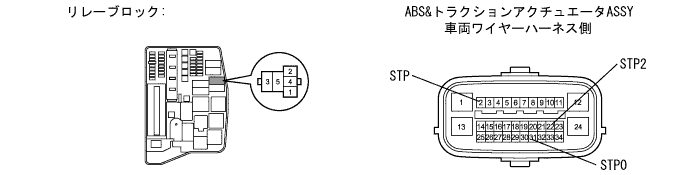
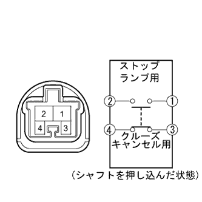
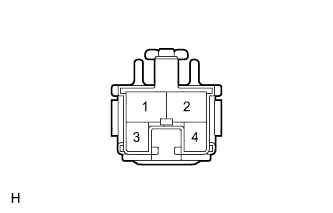
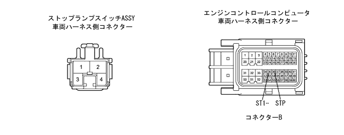

DTC P0571/52 STP Light SW System (Cruise) |
DTC P0571/76 STP Light SW System (Cruise) |
| DTC No. | Diagnosis Description
| Inspection Area |
|---|---|---|
| P0571/52 |
|
|
| P0571/76 |
|
|

)| Step 1 | Inspect Fuse (STOP, IGN, ECU-IG No.1) |
Using SST (Toyota electrical tester), measure the resistance of the fuse.
| Tester Connection | Condition | Standard |
|---|---|---|
| STOP Fuse | Always | Below 1 Ω |
| IGN Fuse | Always | Below 1 Ω |
| ECU-IG No.1 Fuse | Always | Below 1 Ω |
|
| ||||
| OK | |
| Step 2 | Read TaSCAN Data (Stop Light SW, C/C Brake SW (Monitoring CPU), C/C Brake SW (Control CPU)) |
Using SST (TaSCAN), follow the prompts on the screen to display the "ECU Data Monitor" screen and check the computer data. (see)
| Item Name [Symbol] | Item Description/Display Range | Standard Value | Remarks |
|---|---|---|---|
| Stop Light SW [STP] | Indicates brake pedal depressed condition Display range: OFF/ON | Brake pedal depressed: ON Brake pedal released: OFF | Stop light switch assembly circuit |
| C/C Brake SW (Monitoring CPU) [CB2] | Displays cruise cancel signal from stop light switch assembly Display range: OFF/ON | Brake pedal depressed: ON Brake pedal released: OFF |
|
| C/C Brake SW (Control CPU) [CB1] | Displays cruise cancel signal from stop light switch assembly Display range: OFF/ON | Brake pedal depressed: ON Brake pedal released: OFF |
|
|
| ||||
| OK | |
| Step 3 | Inspect BRAKE LP Relay |
Remove the BRAKE LP relay.
 |
Using SST (Toyota electrical tester), measure the resistance between the terminals of the relay.
| Tester Connection | Condition | Standard |
|---|---|---|
| 3 - 4 | When battery voltage is applied between terminals 1 and 2 | 10k Ω or higher |
| 3 - 5 | Below 1 Ω |
|
| ||||
| OK | |
| Step 4 | Inspect Wire Harness and Connector (Battery - Relay Block) |
Turn IG ON.
 |
Using SST (Toyota electrical tester), measure the voltage of each terminal of the relay block.
| Tester Connection | Condition | Standard |
|---|---|---|
| 2 - Body ground | IG ON | 11 to 14 V |
| 5 - Body ground | Always | 11 to 14 V |
|
| ||||
| OK | |
| Step 5 | Inspect Wire Harness and Connector (BRAKE LP Relay - ABS & Traction Actuator Assembly) |
Turn IG OFF.
Disconnect the ABS & traction actuator assembly connector.
Make sure that the BRAKE LP relay has been removed from the relay block.
Using SST (Toyota electrical tester), measure the resistance between the connector terminals of the vehicle wire harness.

| Tester Connection (Terminal Symbol) | Condition | Standard |
|---|---|---|
| 1 - 31(STP0) | Always | Below 1 Ω |
| 3 - 2(STP) | Always | Below 1 Ω |
| 4 - 22(STP2) | Always | Below 1 Ω |
| Tester Connection (Terminal Symbol) | Condition | Standard |
|---|---|---|
| 1 - Body ground | Always | 10k Ω or higher |
| 3 - Body ground | Always | 10k Ω or higher |
| 4 - Body ground | Always | 10k Ω or higher |
|
| ||||
| OK | ||
| ||
| Step 6 | Inspect Stop Light Switch Assembly |
Disconnect the stop light switch assembly connector.
 |
Using SST (Toyota electrical tester), measure the resistance between the connector terminals while operating the shaft.
| Tester Connection | Condition | Standard |
|---|---|---|
| 1←→2 | Shaft not pushed in | Below 1 Ω |
| 1←→2 | Shaft pushed in | 10 kΩ or higher |
| 3←→4 | Shaft not pushed in | 10 kΩ or higher |
| 3←→4 | Shaft pushed in | Below 1 Ω |
|
| ||||
| OK | |
| Step 7 | Inspect Wire Harness and Connector (Power Source - Stop Light Switch Assembly) |
Make sure that the stop light switch assembly connector is disconnected.
 |
Using SST (Toyota electrical tester), measure the voltage of the vehicle side wire harness connector of the stop light switch assembly.
| Tester Connection | Condition | Standard |
|---|---|---|
| 2 - Body ground | IG ON | 11 to 14 V |
| 3 - Body ground | Always | 11 to 14 V |
|
| ||||
| OK | |
| Step 8 | Inspect Wire Harness and Connector (Stop Light Switch Assembly - Engine Control Computer) |
Make sure that the stop light switch assembly connector is disconnected.
Disconnect connector B of the engine control computer.
Using SST (Toyota electrical tester), measure the resistance between the vehicle side wire harness connector terminals. (For Terminals of ECU, see)

| Tester Connection (Terminal Symbol) | Condition | Standard |
|---|---|---|
| 1 - B35(ST1-) | Always | Below 1 Ω |
| 4 - B36(STP) | Always | Below 1 Ω |
| Tester Connection (Terminal Symbol) | Condition | Standard |
|---|---|---|
| 1 - Body ground | Always | 10 kΩ or higher |
| 4 - Body ground | Always | 10 kΩ or higher |
|
| ||||
| OK | ||
| ||